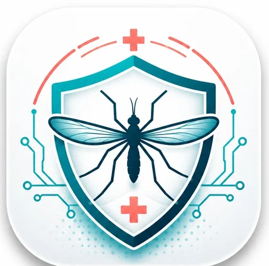
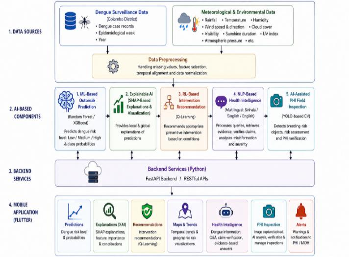

⌁
Research problem
Fragmented tools can make it difficult to translate dengue surveillance data into understandable and actionable information.

VectorShield AIR26-IT-061 · RESEARCH INITIATIVEAn AI-Based Dengue Outbreak Prediction and Intervention Optimization System for the Colombo District, Sri Lanka.
Dengue surveillance requires more than a forecast. Decision-makers need clear explanations, context-sensitive actions, and accessible health information.
This research investigates an integrated decision-support approach combining dengue-risk classification, feature-level explanations, reinforcement learning recommendations, and multilingual health intelligence within a mobile platform.
Discover our approach ↗Fragmented tools can make it difficult to translate dengue surveillance data into understandable and actionable information.
Existing approaches frequently address prediction, explanation, intervention, and communication as separate capabilities.
Integrate predictive, explanatory, prescriptive, and communicative AI functions into one coordinated research framework.
The platform links data-driven prediction with interpretation, intervention support, and health communication.
Random Forest / XGBoost classification of Low, Medium, and High dengue-risk levels from historical, temporal, and meteorological inputs.
SHAP explanations show which variables influence individual predictions and global model behavior.
Q-Learning maps dengue conditions and environmental context to potential public-health response recommendations.
DistilBERT-supported multilingual dengue information processing, evidence retrieval, and misinformation analysis; the paper also describes AI-assisted PHI inspection.
Historical surveillance and meteorological data are prepared, modeled, explained, and passed through backend services to a Flutter mobile interface.

Published evaluation metrics from the group research paper. Current dengue risks are shown only when verified backend predictions are available.
Reported result from the group research paper using the 2025 independent evaluation set. This is not today's forecast confidence.
The data date and geographic coverage will be shown when supplied by the backend. If only weekly forecasts exist, they will be labeled weekly.
Explore research API documentation ↗Explore the research milestones. Dates and assessment weightings will be added when verified against official course records.
Problem identification, literature review, initial aims, and proposed research approach.
Early methodology and progress review.
Updated integration design and development progress.
Final evaluation, deliverables, and live research presentation.
Access the current research paper, proposals, and selected presentation materials. Pending documents will be attached as they become available.
System demonstrations and research feedback. Videos play here when the corresponding MP4 files have been added to the project.
Demonstration of the integrated VectorShield AI workflow.
Research feedback recording, subject to participant consent.
Research feedback recording, subject to participant consent.
Videos are research demonstration and feedback materials, not live medical advice. Publish feedback recordings only with the participants' permission.
Exploratory commercialization opportunities for VectorShield AI. The concept is research-stage; no deployment contracts, buyers, clinical approvals, or revenue claims are implied.
Public-health officials, local authorities, dengue-control teams and communities who benefit from understandable risk information.
Prediction, explanation, intervention support and multilingual dengue-information access in one platform.
Possible collaboration with relevant public-health institutions, subject to testing, permissions, governance, and real-world validation.
Data privacy, professional oversight, accuracy monitoring and independent field evaluation are necessary before production use.
Our research brings together academic guidance and a multidisciplinary student team working across dengue prediction, explainability, intervention optimization, and health intelligence.
Guidance and research supervision from the Sri Lanka Institute of Information Technology.

Four student researchers contributing complementary technical specializations.


Reinforcement Learning-Based Intervention Optimization
Explainable analytics & visualization
Dengue outbreak prediction
Dengue health intelligence
Have an academic question about R26-IT-061? Send a message to our research team using this form.